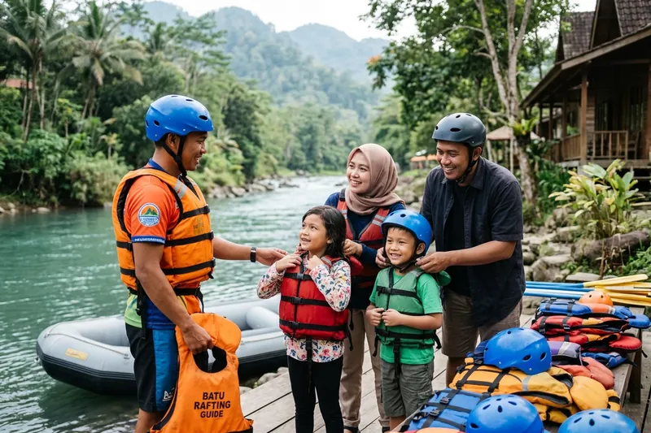

Wisata air keluarga yang aman untuk anak dapat dipilih dengan memperhatikan reputasi operator, kelengkapan fasilitas keselamatan, serta kesesuaian jenis aktivitas dengan usia dan kemampuan fisik anak. Langkah ini penting agar liburan tetap menyenangkan tanpa mengorbankan keselamatan.
Ringkasan Inti
- Reputasi dan izin resmi operator menjadi indikator utama keamanan lokasi wisata air.
- Kelengkapan alat keselamatan seperti pelampung dan pelindung kepala wajib diperiksa.
- Kesesuaian aktivitas dengan usia anak mengurangi risiko cedera selama kegiatan.
- Persiapan fisik dan mental anak sebelum berangkat turut memengaruhi kenyamanan.
- Pengawasan aktif orang tua tetap diperlukan meski berada di lokasi yang aman.
1. Apa Langkah Utama Memilih Wisata Air Keluarga yang Aman?
Langkah utama memilih wisata air keluarga yang aman meliputi memeriksa izin resmi operator, kelengkapan fasilitas keselamatan, serta menyesuaikan jenis aktivitas dengan usia dan kondisi fisik anak sebelum melakukan reservasi.
Mulailah dengan mencari informasi mengenai legalitas usaha wisata air tersebut, baik melalui situs resmi maupun ulasan pengunjung sebelumnya. Operator yang transparan biasanya mencantumkan informasi izin usaha dan standar keselamatan secara jelas.
Selanjutnya, perhatikan kelengkapan alat keselamatan yang disediakan, seperti pelampung dengan ukuran sesuai berat badan anak, helm pelindung untuk aktivitas rafting, dan ban pelampung dalam kondisi baik untuk aktivitas river tubing.
Terakhir, sesuaikan jenis aktivitas dengan usia dan kemampuan fisik anak. Anak usia dini sebaiknya diarahkan pada wisata air anak yang lebih ringan, sementara anak yang lebih besar dapat mempertimbangkan rafting keluarga dengan tingkat arus tenang.
2. Apa Saja Tanda Operator Wisata Air Terpercaya?
Tanda operator wisata air terpercaya meliputi kepemilikan izin usaha resmi, instruktur bersertifikasi, briefing keselamatan sebelum kegiatan, serta transparansi mengenai prosedur darurat yang berlaku di lokasi tersebut.
Operator yang kredibel biasanya memiliki halaman informasi yang jelas mengenai standar operasional keselamatan, termasuk rasio instruktur dibanding peserta dalam setiap sesi kegiatan. Semakin kecil rasio ini, semakin optimal pengawasan yang dapat diberikan.
Selain itu, operator terpercaya umumnya menyediakan asuransi kecelakaan bagi peserta serta memiliki riwayat operasional yang dapat ditelusuri melalui ulasan pelanggan di berbagai platform ulasan wisata.
Perhatikan juga respons operator saat dihubungi sebelum reservasi. Operator yang profesional biasanya bersedia menjelaskan secara detail mengenai batas usia, prosedur keselamatan, dan kebijakan pembatalan kegiatan akibat cuaca buruk.
Baca Juga
3. Bagaimana Mempersiapkan Anak Sebelum Wisata Air Keluarga?
Mempersiapkan anak sebelum wisata air keluarga dapat dilakukan dengan memastikan kondisi kesehatan anak prima, memberikan penjelasan sederhana mengenai kegiatan yang akan dilakukan, serta membawa perlengkapan pendukung yang memadai.
Sebelum berangkat, pastikan anak dalam kondisi sehat dan telah beristirahat cukup. Hindari mengajak anak yang sedang mengalami gangguan kesehatan ringan seperti demam atau flu, karena aktivitas air dapat memperberat kondisi tersebut.
Berikan penjelasan sederhana kepada anak mengenai apa yang akan mereka alami, termasuk sensasi basah, kemungkinan terguncang, dan pentingnya mengikuti arahan instruktur atau penjaga kolam selama kegiatan berlangsung.
Jangan lupa membawa perlengkapan pendukung seperti pakaian ganti, handuk, tabir surya, dan camilan ringan untuk menjaga energi anak selama kegiatan wisata air berlangsung.
4. Apa Peran Pengawasan Orang Tua Selama Wisata Air Keluarga?
Peran pengawasan orang tua selama wisata air keluarga sangat penting untuk memastikan anak tetap berada dalam jangkauan pandang, mengikuti instruksi keselamatan, dan segera mendapat bantuan apabila terjadi situasi darurat.
Meski berada di lokasi dengan standar keselamatan tinggi, kelalaian pengawasan tetap dapat meningkatkan risiko insiden. Orang tua disarankan untuk tidak sepenuhnya menyerahkan pengawasan kepada instruktur atau penjaga kolam, terutama untuk anak usia dini.
Menurut data organisasi kesehatan dunia (WHO), sebagian besar kasus tenggelam pada anak terjadi akibat kurangnya pengawasan langsung dari orang dewasa di sekitar area air, sehingga kehadiran aktif orang tua tetap menjadi faktor keselamatan yang tidak tergantikan.
5. Apa Kesalahan yang Sering Terjadi saat Memilih Wisata Air Keluarga?
Kesalahan yang sering terjadi saat memilih wisata air keluarga meliputi tidak memeriksa reputasi operator secara menyeluruh, memaksakan anak mengikuti aktivitas yang belum sesuai usia, dan mengabaikan kondisi cuaca sebelum kegiatan berlangsung.
Banyak keluarga tergiur promosi harga murah tanpa memeriksa standar keselamatan yang berlaku di lokasi tersebut. Hal ini berisiko menempatkan anak pada situasi yang seharusnya dapat dihindari dengan riset sederhana sebelum reservasi.
Kesalahan lain adalah mengabaikan prakiraan cuaca, terutama untuk aktivitas di sungai alami seperti rafting keluarga. Kondisi hujan deras sebelum kegiatan dapat meningkatkan debit air dan kecepatan arus secara signifikan, sehingga meningkatkan risiko selama kegiatan berlangsung.
Memilih wisata air keluarga yang aman untuk anak memerlukan kombinasi antara riset reputasi operator, kesesuaian aktivitas dengan usia anak, serta pengawasan aktif orang tua sepanjang kegiatan berlangsung. Dengan persiapan yang matang, liburan wisata air bersama keluarga dapat berjalan menyenangkan tanpa mengorbankan aspek keselamatan anak.
6. FAQ Seputar Wisata Air Keluarga
Abiyyu
Seorang penulis artikel yang sudah berpengalaman di dalam dunia wisata outbound Batu Malang.